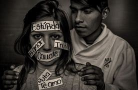
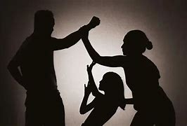
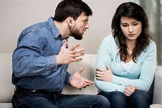
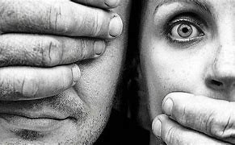

Violencia: Definición, Tipos y Cómo Prevenirla
La violencia es el uso intencional de la fuerza física, verbal o psicológica para causar daño a una persona, grupo o comunidad. Se manifiesta de diversas maneras y tiene efectos devastadores en la sociedad.
Si bien el concepto de violencia es claro, el modo en que se puede manifestar varía según cada cultura. Además, a medida que la humanidad evoluciona, es necesario volver a analizar las diferentes modalidades en las que se manifiesta la violencia desde la ética, la moral o el derecho. Esto permite visibilizar aspectos de la vida cotidiana que resultan hechos de violencia y abuso, pero que no suelen ser reconocidos como tales por formar parte de las costumbres de una cultura determinada (por ejemplo, la esclavitud fue común y legal durante cientos de años hasta su abolición a partir del siglo XIX, primero en Europa y luego en el continente americano).
¿Qué es la violencia?
La violencia se puede clasificar en diferentes tipos según su naturaleza y el contexto en el que ocurre. A continuación, exploramos los principales tipos de violencia:
1. Violencia física
Incluye agresiones como golpes, empujones, heridas con objetos, entre otros. Es una de las formas más visibles y comunes de violencia.
La violencia física es cualquier acto intencional que cause daño corporal a otra persona mediante el uso de la fuerza. Esta puede manifestarse de diversas maneras, desde golpes, empujones y patadas hasta el uso de objetos o armas para infligir dolor o lesiones. Se trata de una forma de agresión que viola los derechos fundamentales de la persona afectada y puede tener consecuencias devastadoras tanto a nivel físico como psicológico.
2. Violencia psicológica
Consiste en el uso de palabras o actitudes para manipular, intimidar o degradar a una persona, afectando su autoestima y bienestar emocional.
No siempre la violencia deja marcas en la piel. A veces, el daño es más sutil, más profundo, más difícil de ver. La violencia psicológica es un veneno silencioso, un susurro que se clava en la mente, una sombra que se adhiere al alma. No necesita golpes ni heridas visibles; su arma es la palabra, el desprecio, la manipulación. Se esconde en gestos que minimizan, en silencios que castigan, en miradas que humillan.
3. Violencia sexual
Abarca todo tipo de agresión o abuso de carácter sexual sin el consentimiento de la víctima. Puede incluir acoso, abuso y violación.

Hay heridas que van más allá de la piel, que atraviesan la carne y se instalan en lo más profundo del ser. La violencia sexual es una de ellas. No es solo un acto físico; es una invasión, un ultraje, un arrebato brutal del derecho más básico: el dominio sobre el propio cuerpo. Es el intento de borrar la voluntad, de reducir a la persona a un objeto, de imponer el deseo de uno sobre el miedo del otro.
4. Violencia económica
Ocurre cuando una persona controla o limita los recursos económicos de otra, impidiéndole el acceso a bienes básicos.
No todas las cadenas son de hierro. Algunas son cuentas bancarias controladas, salarios retenidos, gastos justificados con desprecio. La violencia económica es una prisión sin barrotes, un mecanismo de dominio que reduce la libertad de quien la sufre. No necesita gritos ni golpes; basta con cortar el acceso al dinero, con sembrar el miedo a la pobreza, con hacer que la víctima dependa por completo de su agresor.
5. Violencia de género
Es la violencia ejercida sobre una persona debido a su identidad de género u orientación sexual.
La violencia de género es una sombra alargada que se cierne sobre el alma de una sociedad que aún no ha aprendido a amar sin cadenas. Es el grito silenciado en una habitación oscura, la herida que no siempre deja marcas visibles, el miedo que se cuela en cada paso, en cada palabra no dicha. Es el abuso de poder disfrazado de costumbre, la injusticia enquistada en la piel de quienes han sido reducidos a un papel impuesto por otros.
Cómo prevenir la violencia
- Educación en valores: Fomentar el respeto y la empatía desde la infancia.
- Comunicación efectiva: Resolver conflictos mediante el diálogo.
- Denuncia de la violencia: Alertar a las autoridades ante cualquier caso de violencia.
- Apoyo a las víctimas: Proporcionar ayuda psicológica y legal a quienes sufren violencia.
Aquí tienes un cómic sobre cómo evitar la violencia.
>